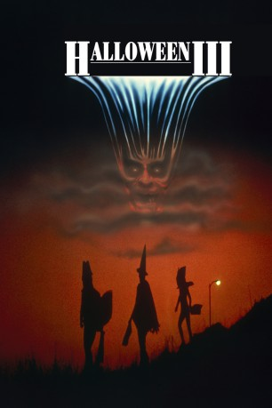
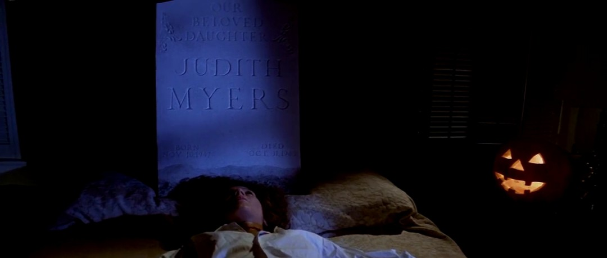

#7474 Halloween 3 - Die Nacht der Entscheidung
Alternativ: Halloween III: Season of the Witch
 
 IMDB-Wertung: 4.7 / 10
IMDB-Wertung: 4.7 / 10  Metascore: 0
Metascore: 0 
Ein Mann wird von Unbekannten durch eine Stadt irgendwo in Nordkalifornien gehetzt, schließlich bricht er mit einer seltsamen Halloween Maske in der Hand zusammen. Kurz darauf wird er auf bestialische Weise im Krankenhaus durch die Unbekannten ermordet. All dies scheint mit dem Spielzeughersteller Silver Shamrock zusammenzuhängen, der seine Monster-Masken durch eine riesige Werbekampagne überall im Land vertreibt. Der mysteriöse Boss der Spielzeugfirma hat jedoch teuflisches im Sinn, das ganze Grauen wird erst in der Halloween-Nacht deutlich ...
Jahr: 1982
Dauer: 98 Minuten
FSK: 16
Land: USA Studio: Universal® An MCA CompanyTonspuren:
Untertitel: Deutsch,
Auflösung: 1080p (1920x808) Größe: 5847 MB
Genre: Horror, Sci-Fi, Mystery
Regisseur:  Tommy Lee Wallace
Tommy Lee Wallace
Drehbuch: Tommy Lee Wallace
Soundtrack:
Darsteller:
- Tom Atkins als Daniel Challis
- Stacey Nelkin als Ellie Grimbridge
 Dan O'Herlihy als Conal Cochran
Dan O'Herlihy als Conal Cochran- Brad Schacter als Little Buddy
-  Nancy Kyes als Linda Challis
- Jonathan Terry als Starker
- Al Berry als Harry Grimbridge
- Maidie Norman als Nurse Agnes
 Loyd Catlett als Charlie
Loyd Catlett als Charlie Paddi Edwards als Secretary
Paddi Edwards als Secretary Dick Warlock als Assassin
Dick Warlock als Assassin- Joshua John Miller als Willie Challis
- Michael W. Green als Technician #2
- Jamie Lee Curtis als Curfew Announcer / Telephone Operator , uncredited
- Tommy Lee Wallace als Silver Shamrock Commercial Announcer , uncredited
- Michael Currie als Rafferty
- Ralph Strait als Buddy Kupfer
- Jadeen Barbor als Betty Kupfer
- Garn Stephens als Marge
- Wendy Wessberg als Teddy
- Essex Smith als Walter Jones
- John MacBride als Sheriff
- Norman Merrill als Red
- Patrick Pankhurst als Technician
- Martin Cassidy als Watcher
- Michelle Walker als Bella Challis
- Jeffrey D. Henry als Motel Technician
- Kevin Schumm als Child in Silver Shamrock Commercial , uncredited
- Kyle J. Wood als Maskmaker , uncredited
Datei: X:\FSK18-Collections\Halloween\Halloween 3 - Die Nacht der Entscheidung (1982, FSK16, 1920x808).mkv seit 15.11.2017
Festplatte: FSK18
 Es gibt insgesamt 14 Filme in der Gruppe 'FSK18-Collections\Halloween'
Es gibt insgesamt 14 Filme in der Gruppe 'FSK18-Collections\Halloween'